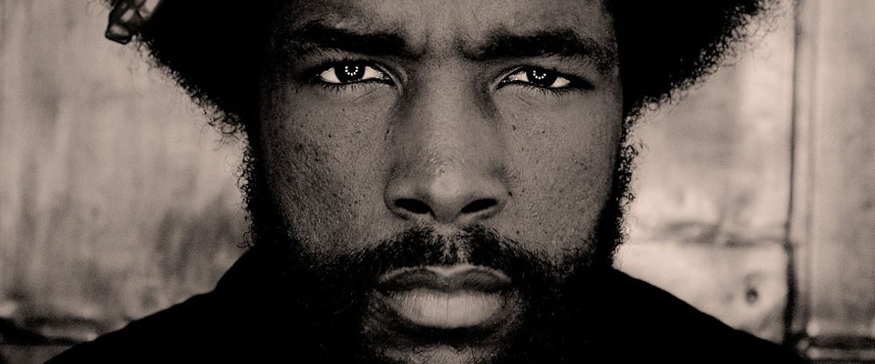
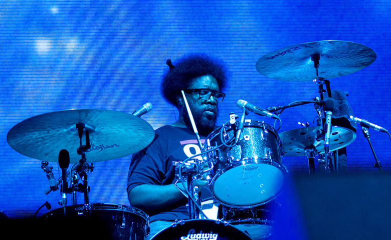
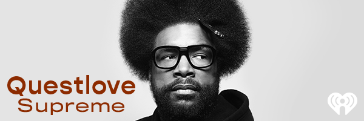

Biography

Ahmir Khalib Thompson (born January 20, 1971), known professionally as Questlove (stylized as ?uestlove), is an American
musician and music journalist. He is the drummer and joint frontman (with Black Thought) for the hip hop band, the Roots.
The Roots has been serving as the in-house band for The Tonight Show Starring Jimmy Fallon since February 17, 2014.
Questlove is also one of the producers of the cast album of the Broadway musical Hamilton. He is the co-founder of the
websites Okayplayer and OkayAfrica. Additionally, he is an adjunct instructor at the Clive Davis Institute of Recorded
Music at New York University.
Career

The Roots originated in Philadelphia with Ahmir "Questlove" Thompson and Tariq "Black Thought" Trotter while they
were both attending the Philadelphia High School for the Creative and Performing Arts. They would busk out on the
street corners with Questlove playing bucket drums and Tariq rapping over his rhythms. Their first organized gig was a
talent show in 1989 at the school where they used the name Radio Activity, which began a series of name changes that
progressed through Black to the Future and then The Square Roots. Another MC, Malik B., and a permanent bass
player, Leonard "Hub" Hubbard, were added to the band before the release of their first album. In 1992, they dropped
the "Square" from "Square Roots" because a local folk group had claim to the name.
Supreme Podcasts

Questlove Supreme is a fun, irreverent and educational weekly podcast that digs deep into the stories of musical legends and
cultural icons in a way that only Questlove and Team Supreme can deliver. This is about legends and legends in the making
bringing their legacy to life in their own words. Previous guests have included Usher, Michelle Obama, Chris Rock,
Steve Miller, Maya Rudolph, Weird Al, Chaka Khan, Babyface and many more.